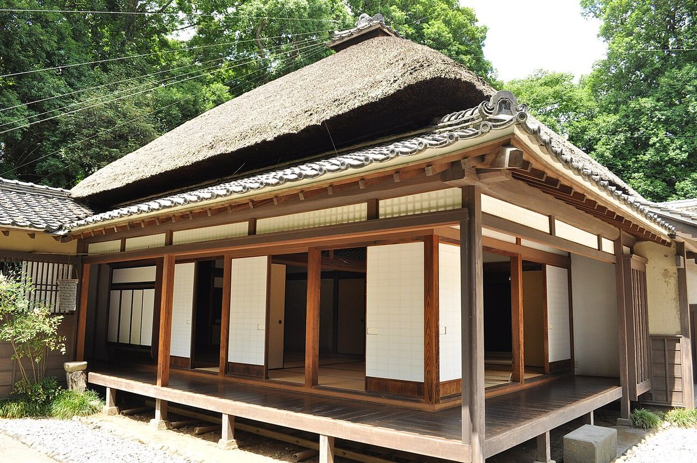
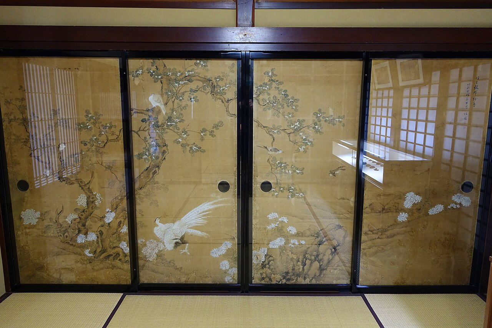
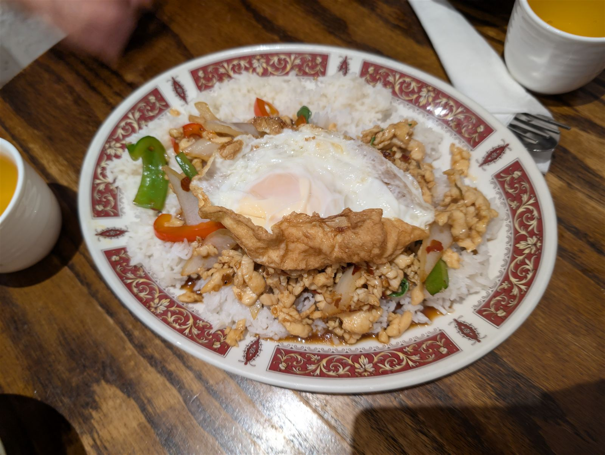
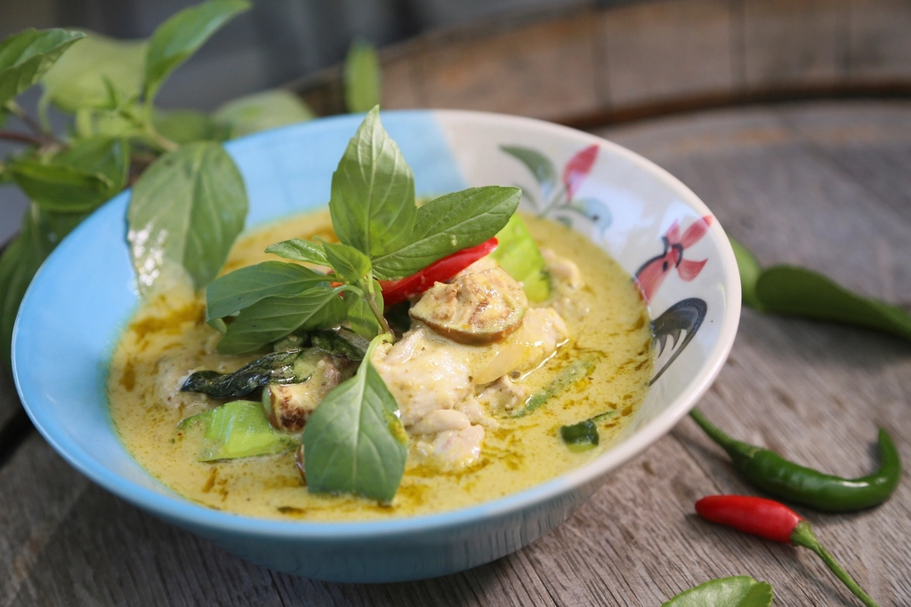
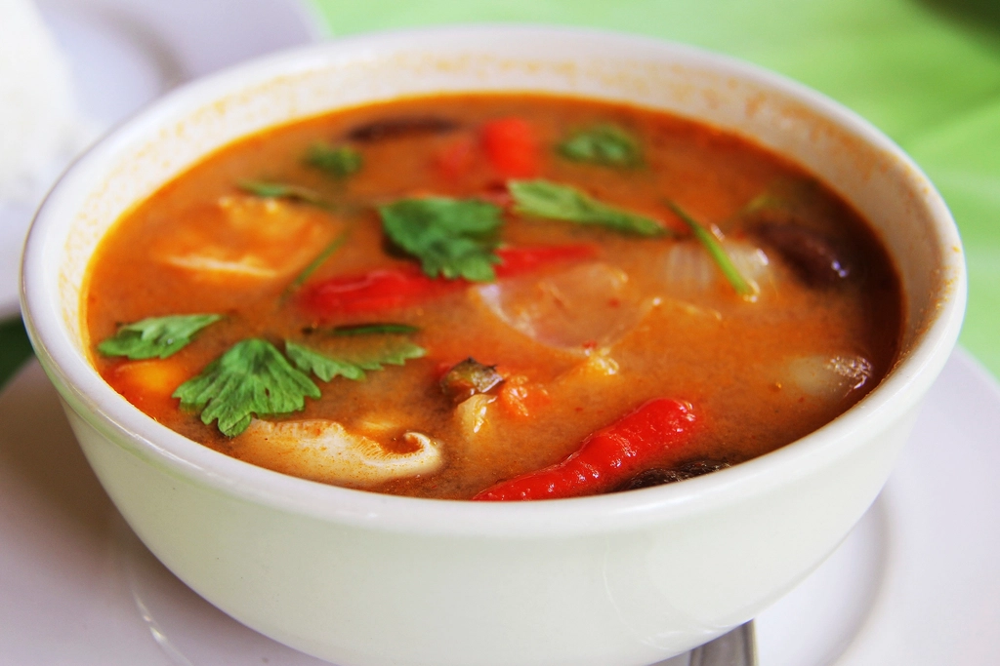
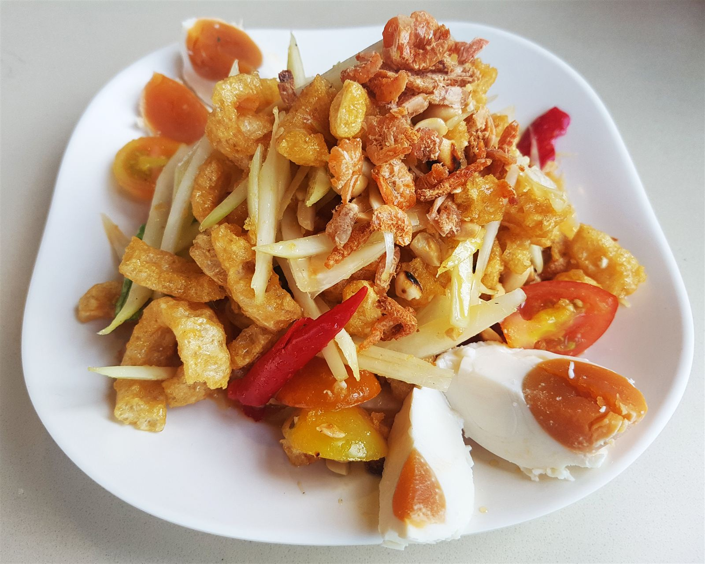
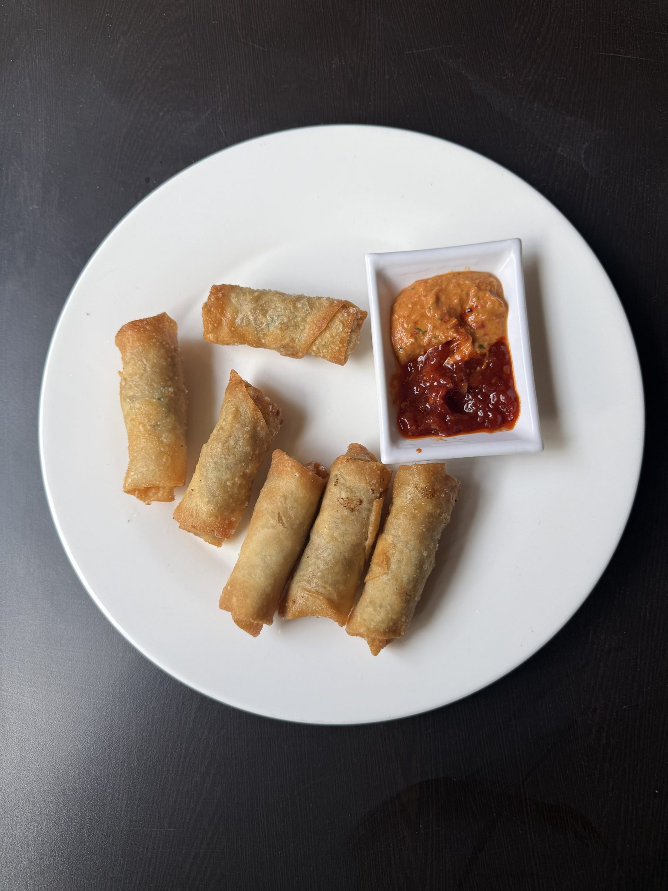
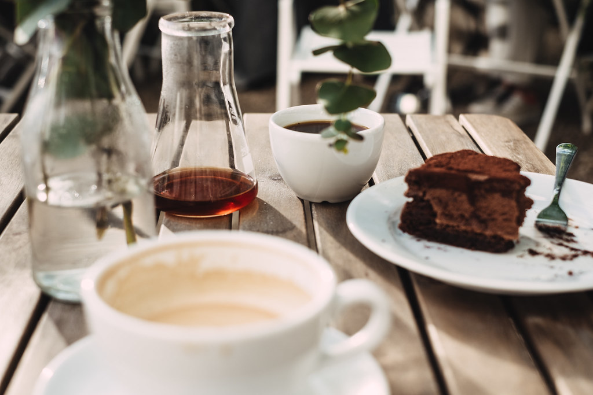

ABOUT
お店の由来・想い
「三丁町カフェぼんくら」があるのは、福井県小浜市の三丁町。かつて茶屋が並んだ花街として知られる、古い家並みの残るエリアです。
お店の建物は、明治28年(1895年)より前に建てられた古い家だと紹介されています。もとは店主・河野泰夫さんのご家族が暮らしていた家で、ご両親は仕出し料理と民宿を営んでいたそうです。店主がこの家を改装して、カフェとして開きました。
店主は、東南アジアの食文化に出会って心を動かされ、タイ料理に惹かれていったと紹介されています。最初に出したのは、タイのカオマンガイをもとにした「小浜鶏飯」。レシピはタイの知人に教わったものや、現地で食べ歩いて学んだものだそうです。
- 建物明治28年以前の建築、旧花街の古い家(改装)
- 特徴階段箪笥、船底天井、大正期のガラスなど(取材記事より)
- 料理店主が作るタイ料理が中心
店名「ぼんくら」の由来は、確認できた資料に載っていません。この試作サイトでは意味を断定しません。



MENU
メニュー・提供内容
タイ料理を中心に、コーヒーやスイーツも楽しめるお店です。確認できている品名を紹介します。写真はすべてフリー素材のイメージで、実際のお料理とは異なります。

ガパオライス
取材記事・口コミサイトで名前が挙がっている一品です。価格:準備中

グリーンカレー
ランチではドリンク・デザート・スープ付のセットと紹介されています(2022年の記事)。内容は変わる場合があります。

フォーなどのタイ料理
フォーも口コミで挙がっています。写真はスープ料理のイメージです。

アジアン・エスニック
テイクアウトも人気と紹介されています。写真は別の料理のイメージです。

つまみ・一品
詳細は準備中(写真はイメージです)
カフェタイム

コーヒーとケーキ
「三丁町ブレンド」などのコーヒーとスイーツが口コミで挙がっています。

ドリンク
メニュー・価格:準備中

デザート・パフェ
アイスやパフェがおすすめと紹介する記事があります。内容:準備中
営業時間・定休日・価格・メニューの詳細は準備中です。掲載サイトにより営業時間の記載が異なるため、ご来店前にInstagramなどでご確認ください。
VOICE
口コミ(イメージ例)
以下は制作側が作成したイメージ例です。実在のお客様の声ではありません。
古い家の玄関を入ると、どこか懐かしい空気。ガパオライスの香りが食欲をそそりました。
ランチのグリーンカレーにスープとデザートまで付いて、ゆっくり過ごせました。
三丁町の散歩の途中に立ち寄って、コーヒーでひと休み。落ち着く空間でした。